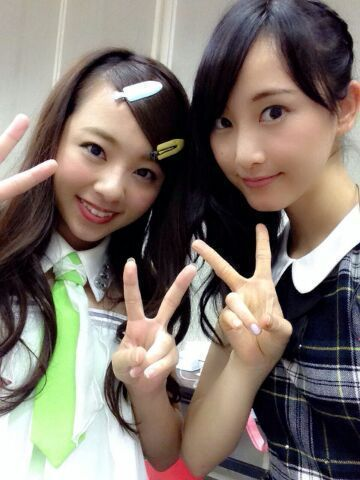
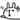
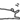

| 2014/08 19 Tue | 真夏の全国ツアー大阪 !!! 551 の豚まん(#^.^#) ろってぃ− |
皆が読んでる頃には おはようございますヽ(・∀・)ノ.*
でも今は 夜中の2時半です..*
ろってぃ−です..♪
( れなさんが写真送ってくれました*´`*) )

↑この前ガールズルールの衣装 久しぶりに着ました...*
なんか へそだしとか 肩だしとか恥ずかしい,普通に(/-＼*)
土曜日は 大阪にてliveをやってきました !!!
来てくださったファンの皆様、ありがとうございました＼(^o^)／ スタッフさん方もありがとうございました！
地元大阪とゆうことで、しかも 地元中の地元って感じの所でliveをやらせて頂きました！
大阪にいた頃に何度も来たことのある場所で、自分がliveするとは 思っていなかったな〜.♪
本当に楽しかったし、大阪の皆さんのおかげで、いいスタートがきれたと思います(`・ω・)
でも まだまだこのままじゃダメや〜笑
本当に、どうにかして もっと成長せな〜笑
全体も自分も..*
あっ、内容はまだ言えないけど、ろってぃーが踊ってるところ見てくれたかな
 ？
？
MCトークでも言ったけど、ろってぃーのこと好きになって帰ってくれたかな   ？笑
live終わって びちょびちょの髪の毛クチャクチャの写真 です

なかなか... やばい(；・∀・)笑
モバメで送ったけど、前日のリハーサル終わった夜遅くの写真...* 隣に なあちゃんもいますヽ(・∀・)ノ
大阪 ３人トリオやでん ( * ^^)/
またさ、ちゃんと衣装着てメイクしてる時に３人で撮ろうね\(^○^)/
今 こんな夜遅くに ひめかとmailしてます 笑
そろそろ おやすみなさい..*しようかな(*^.^*)
おやすみなさい.. らぶ

コメント(237)
2014/08/19 08:00